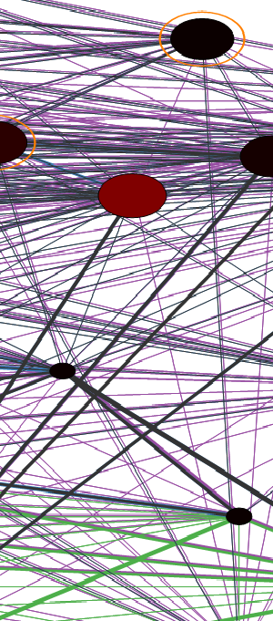
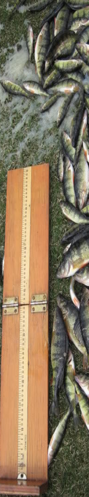

My approach is to develop general ecological theory and then test it empirically. To develop theory I use both computational and analytical methods, including simulations of stochastic multispecies models of ecological communities and analyses of the resulting community matrices. I test model predictions in aquatic ecosystems using a variety of empirical methods, including field observations and lab experiments.
|  |
Our capacity to forecast how species respond to press perturbations such as climate change is limited by our imprecise knowledge of pairwise species interaction strengths and the many direct and indirect pathways along which perturbations can propagate between species. Network complexity (size and connectance) has thereby been seen to limit the predictability of ecological systems. In this study, Mark Novak and I demonstrate a counteracting mechanism in which the influence of indirect effects declines with network complexity when species interactions are governed by universal allometric constraints. With these constraints network size and connectance interact to produce a skewed distribution of interaction strengths whose skewness becomes more pronounced with increasing complexity. Together, the increased prevalence of weak interactions and the increased relative strength and rarity of strong interactions in complex networks limit disturbance propagation and preserve the qualitative predictability of net effects even when pairwise interaction strengths exhibit substantial variation or uncertainty. (This work will appear soon in The American Naturalist - stay tuned!) |
|
Although temperature is often identified as the main environmental factor defining the distribution of marine species, the mechanisms producing these community-level patterns are not well understood. Using simulated allometric trophic network (ATN) models, I investigated community-level patterns that emerge from individual-level (physiology) temperature effects. I found that the persistence of cold-adapted ecototherms was greatest when ingestion rates were not as sensitive to temperature as metabolic rates. However, the persistence of these species under this parameter configuration decreased with increasing temperatures (Iles in prep), as oberved in natural ecosystems and microcosm experiments. This result suggested that cold-adapted ectotherm consumers would be likely to exhibit metabolic rates that increase faster with temperature than ingestion rates. As an empirical test, I quantified the relative temperature scaling of metabolic and ingestion rates for a suite of rocky intertidal invertebrate consumers. As predicted, intertidal consumer basal metabolic rates were more sensitive to temperature than ingestion rates. Such general patterns across species in the relative temperature scaling of biological rates are extremely powerful for scaling up effects to the community-level (Iles 2014 Ecology). |
|
In order to predict community-level impacts, we must also understand of how the environmental conditions in which ecological communities exist are changing. Along the U.S. west coast, seasonal upwelling brings deep, cold, nutrient rich water to the ocean surface, resulting in highly productive coastal ecosystems. As upwelling is driven by large-scale atmospheric patterns, global climate change has the potential to affect a wide range of significant ecological processes through changes in water chemistry, water temperature, and the transport processes that influence species dispersal and recruitment. In collaboration with Tarik Gouhier and my advisor, Bruce Menge, we examined long-term trends in the frequency, duration, and strength of upwelling events for the California Current System along the coast of Oregon and California. We found trends towards stronger and more persistent upwelling events, a pattern which is consistent with climate change predictions ( |
|  |
Most research in aquatic ecosystem toxicology focuses on the direct, physiological effects of pollutants on fish growth. My master's research demonstrated community-level effects on fish growth, due to changes in energy flow through a modified food web ( Acknowledging the importance of predator/prey body size ratios, I incorporated body size as a factor when experimentally measuring the temperature effects on rocky intertidal consumer ingestion and metabolic rates. I documented a hump-shaped relationship between predator/prey body size ratios and species interaction strengths, indicating constraints at both ends of the spectrum. |